전기공사산업기사 (2017-09-23 기출문제)
1과목: 전기응용
1. 발산광속이 상향으로 90~100[%] 정도 발산하며 직사 눈부심이 없고 낮은 휘도를 얻을 수 있는 조명방식은?
- 직접조명
- 간접조명
- 국부조명
- 전반확산조명
(정답률: 74%)

2. 60[m2]의 정원에 평균조도 20[lx]를 얻기 위해 필요한 광속[lm]은? (단, 유효한 광속은 전광속의 40[%]이다.)
- 3000
- 4000
- 4500
- 5000
(정답률: 60%)
3. 음극만 발광하므로 직류 극성을 판별하는데 이용되는 것은?
- 네온램프
- 크립톤램프
- 크세논램프
- 나트륨램프
(정답률: 67%)
4. 반도체 소자 중 게이트-소스간 전압으로 드레인 전류를 제어하는 전압제어 스위치로 스위칭 속도가 빠른 소자는?
- SCR
- GTO
- IGBT
- MOSFET
(정답률: 69%)
5. 금속 중 이온화 경향이 가장 큰 물질은?
- K
- Fe
- Zn
- Na
(정답률: 62%)
6. 발전소에 설치된 50[t]의 천장주행 기중기의 권상속도가 2[m/min]일 때 권상용 전동기의 용량은 약 몇 [kW]인가? (단, 효율은 70[%]이다.)
- 5
- 10
- 15
- 23
(정답률: 64%)
7. 차륜의 탈선을 막기 위해 분기 반대쪽 레일에 설치한 레일은?
- 전철기
- 완화곡선
- 호륜궤조
- 도입궤조
(정답률: 75%)
8. 적분 요소의 전달 함수는?
- K
- Ts
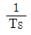
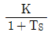
(정답률: 70%)
9. 내화 단열재의 구비조건으로 틀린 것은?
- 내식성이 클 것
- 급열, 급냉에 견딜 것
- 열전도율, 체적비열이 클 것
- 피열물간에 화학작용이 없을 것
(정답률: 75%)
10. 광질과 특색이 고휘도이고 광색은 적색부분이 많고 배광제어가 용이하며 흑화가 거의 일어나지 않는 램프는?
- 수은램프
- 형광램프
- 크세논램프
- 할로겐램프
(정답률: 71%)
11. 유도장해를 경감할 목적으로 하는 흡상 변압기의 약호는?
- PT
- CT
- BT
- AT
(정답률: 64%)
12. 무인 엘리베이터의 자동제어는?
- 정치제어
- 추종제어
- 비율제어
- 프로그램제어
(정답률: 81%)
13. 반지름 20[cm]인 완전 확산성 반구를 사용하여 평균 휘도가 0.4[cd/cm2]인 천장등을 가설하려고 한다. 기구 효율을 0.8이라 하면 약 몇 [lm]의 광속이 나오는 전등을 사용하면 되는가?
- 1985
- 3944
- 7946
- 1⑤30
(정답률: 40%)
14. 전기회로와 열회로의 대응관계로 틀린 것은?
- 전류 - 열류
- 전압 - 열량
- 도전율 - 열전도율
- 정전용량 - 열용량
(정답률: 76%)
15. 200[cd]의 점광원으로부터 5[m]의 거리에서 그 방향과 직각인 면과 60˚ 기울어진 수평면상의 조도[lx]는?
- 4
- 6
- 8
- 10
(정답률: 63%)
16. 열전 온도계의 특징에 대한 설명으로 틀린 것은?
- 제벡효과의 동작원리를 이용한 것이다.
- 열전대를 보호할 수 있는 보호관을 필요로 하지 않는다.
- 온도가 열기전력으로써 검출되므로 피측온점의 온도를 알 수 있다.
- 적절한 열전대를 선정하면 0~1600 [℃] 온도범위의 측정이 가능하다.
(정답률: 74%)
17. 고주파 유도가열에 사용되는 전원이 아닌 것은?
- 동기 발전기
- 진공관 발진기
- 고주파 전동발전기
- 불꽃 간극식 고주파 발진기
(정답률: 62%)
18. 전동기의 진동 원인 중 전자적 원인이 아닌 것은?
- 베어링의 불평등
- 고정자 철심의 자기적 성질 불평등
- 회전자 철심의 자기적 성질 불평등
- 고조파 자계에 의한 자기력의 불평등
(정답률: 68%)
19. 배리스터(Varistor)의 주된 용도는?
- 전압 증폭
- 온도 보상
- 출력 전류 조절
- 스위칭 과도전압에 대한 회로 보호
(정답률: 71%)
20. 광석에 함유되어 있는 금속을 산 등으로 용해시킨 전해액으로 사용하여 캐소드에 순수한 금속을 전착시키는 방법은?
- 전해정제
- 전해채취
- 식염전해
- 용융점전해
(정답률: 56%)
2과목: 전력공학
21. 차단기와 비교하여 전력퓨즈에 대한 설명으로 적합하지 않은 것은?
- 가격이 저렴하다.
- 보수가 간단하다.
- 고속 차단을 할 수 있다.
- 재투입을 할 수 있다.
(정답률: 57%)
22. 다음 중 대한민국에서 가장 많이 사용하는 현수애자의 폭의 표준은 몇 [mm]인가?
- 160
- 250
- 280
- 320
(정답률: 50%)
23. 다음 중 코로나 방지대책으로 적당하지 않은 것은?
- 복도체를 사용한다.
- 가선 금구를 개량한다.
- 선간거리를 감소시킨다.
- 가선 시 전선 표면의 금구를 손상하지 않게 한다.
(정답률: 49%)
24. 유효낙차 30[m], 출력 2000[kW]의 수차발전기를 전부하로 운전하는 경우 1시간당 사용 수량은 약 몇 [m3]인가? (단, 수차 및 발전기의 효율은 각각 95[%], 82[%]로 한다.)
- 15500
- 22500
- 25500
- 31500
(정답률: 25%)
25. 어떤 발전소에서 발열량 5000[kcal/kg]의 석탄 15[ton]을 사용하여 40000[kWh]의 전력을 발생하였을 경우 이 발전소의 열효율은 약 몇 [%]인가?
- 23.5
- 34.4
- 45.9
- 53.4
(정답률: 31%)
26. 154[kV] 2회선 송전 선로의 길이가 154[km]이다. 송전용량 계수법에 의하면 송전용량은 약 몇 [MW]인가? (단, 154[kV]의 송전용량 계수는 1300 이다.)
- 250
- 300
- 350
- 400
(정답률: 30%)
27. 같은 전력을 수송하는 배전선로에서 다른 조건은 현 상태로 유지하고 역률만을 개선할 때의 효과로 기대하기 어려운 것은?
- 고조파의 경감
- 전압강하의 경감
- 배전선의 손실 저감
- 설비용량의 여유 증가
(정답률: 40%)
28. 옥내배선 공사에서 간선(도체)의 굵기를 결정하기 위해서 고려할 사항이 아닌 것은?
- 허용전류
- 기계적 강도
- 전선의 길이
- 전선의 허용전류
(정답률: 49%)
29. 피뢰기의 직렬 갭의 작용은?
- 이상전압의 진행파를 증가시킨다.
- 상용주파수의 전류를 방전시킨다.
- 이상전압의 파고치를 저감시킨다.
- 이상전압이 내습하면 뇌전류를 방전하고, 속류를 차단하는 역할을 한다.
(정답률: 57%)
30. 소호리액터접지 계통에서 리액터의 탭을 사용할 경우 합조도가 부족보상 상태로 운전하면 안되는 이유는?
- 전력손실을 줄이기 위해서
- 통신선에 대한 유도장해를 줄이기 위해서
- 접지계전기의 동작을 확실하게 하기 위해서
- 지락사고 발생 시 건전상의 대지전압이 과도하게 상승할 우려가 있기 때문에 위험 방지를 위해서
(정답률: 49%)
31. 송전선로에서 역섬락이 생기기 가장 쉬운 경우는?
- 선로 손실이 큰 경우
- 코로나 현상이 발생한 경우
- 선로정수가 균일하지 않을 경우
- 철탑의 탑각 접지 저항이 큰 경우
(정답률: 52%)
32. 전력선과 통신선과의 상호인덕턴스에 의하여 발생되는 유도장해는?
- 전력유도장해
- 전자유도장해
- 정전유도장해
- 고조파 유도장해
(정답률: 50%)
33. 공기차단기에 비해 SF6 가스차단기의 특징으로 볼 수 없는 것은?
- 밀폐된 구조이므로 소음이 없다.
- 소전류 차단 시 이상전압이 높다.
- 아크에 SF6 가스는 분해되지 않고 무독성이다.
- 같은 압력에서 공기의 2~3배 정도의 절연내력이 있다.
(정답률: 53%)
34. 그림과 같은 선로에서 점 F에서의 1선 지락이 발생한 경우 영상임피던스는?
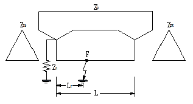
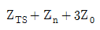
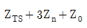
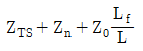
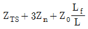
(정답률: 33%)
35. 선로의 특성 임피던스에 대한 설명으로 알맞은 것은?
- 선로의 길이에 비례한다.
- 선로의 길이에 반비례한다.
- 선로의 길이에 관계없이 일정하다.
- 선로의 길이보다 부하에 따라 변화한다.
(정답률: 41%)
36. 반한시 계전기의 동작 특성에 대한 설명으로 가장 알맞은 것은?
- 설정된 값 이상의 전류가 흘렀을 때 동작 전류의 크기와는 관계없이 항상 일정한 시간 후에 작동한다.
- 설정된 최소 동작 전류 이상의 전류가 흐르면 즉시 작동하는 것으로 한도를 넘은 양과는 관계없이 작동한다.
- 동작시간이 어느 전류값까지는 그 크기에 따라 반비례 특성을 가지며 그 이상이 되면 일정한 시간 후에 작동한다.
- 동작시간이 전류값의 크기에 따라 변하는 것으로 전류값이 클수록 빠르게 동작하고 반대로 전류값이 작아질수록 느리게 작동한다.
(정답률: 39%)
37. 다음 중 송ㆍ배전선로의 진동 방지대책에 사용되지 않는 기구에 해당되는 것은?
- 댐퍼
- 죄임쇠
- 클램프
- 아머 로드
(정답률: 41%)
38. 임피던스 Z1, Z2 및 Z3을 그림과 같이 접속한 선로의 A쪽에서 전압파 E가 진행해 왔을 때 접속점 B에서 무반사로 되기 위한 조건은?
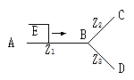
- Z1=Z2+Z3
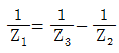
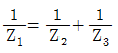
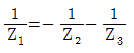
(정답률: 49%)
39. 송전선로에서 코로나 임계전압이 높아지는 경우는?
- 기압이 낮은 경우
- 온도가 높아지는 경우
- 전선의 지름이 큰 경우
- 상대공기밀도가 작을 경우
(정답률: 47%)
40. 과전류 계전기의 탭 값은 무엇으로 표시되는가?
- 변류기의 권수비
- 계전기의 동작시한
- 계전기의 최대 부하전류
- 계전기의 최소 동작전류
(정답률: 41%)
3과목: 전기기기
41. 단상변압기 3대로 Y-Y결선을 하는 경우에 대한 설명으로 틀린 것은?
- 중성점 접지가 가능하다.
- 제3고조파 전류가 흐르며 유도장해를 일으킨다.
- 1차측과 2차측의 각 상전압의 위상은 같다.
- 상전압이 선간전압의 √3배이므로 절연이 용이하다.
(정답률: 38%)
42. 특수 동기기에 대한 설명 중 틀린 것은?
- 반작용 전동기 : 역률이 좋다.
- 동기 주파수 변환기 : 조작이 간편하고 효율이 좋다.
- 정현파 발전기 : 부하에 관계없이 정현파 기전력을 발생한다.
- 유도 동기 전동기 : 기동 토크와 인입 토크가 크다.
(정답률: 35%)
43. 인버터(inverter)에 대한 설명으로 옳은 것은?
- 직류를 교류로 변환
- 교류를 교류로 변환
- 직류를 직류로 변환
- 교류를 직류로 변환
(정답률: 55%)
44. 3상 4극 유도전동기가 있다. 고정자의 슬롯 수가 24라면 슬롯과 슬롯 사이의 전기각은?
- 40˚
- 30˚
- 20˚
- 10˚
(정답률: 42%)
45. 220/110[V], 60[Hz]인 이상적인 변압기가 있다. 변압기의 철심자속이 5×10-3[Wb]일 경우 1차 및 2차 권선은 약 몇 턴으로 하여야 하는가?
- 1차 권선 : 182, 2차 권선 : 91
- 1차 권선 : 166, 2차 권선 : 83
- 1차 권선 : 154, 2차 권선 : 77
- 1차 권선 : 150, 2차 권선 : 75
(정답률: 33%)
46. 동기발전기의 전기자권선을 전절권보다 단절권으로 감으면 나타나는 현상은?
- 효율이 낮아진다.
- 권선의 동손이 증가한다.
- 권선의 재료가 증가한다.
- 기전력의 파형이 좋아진다.
(정답률: 52%)
47. 3상 유도전동기의 전전압 기동토크는 전부하시의 1.8배이다. 전전압의 2/3로 기동할 때 기동토크는 전부하시의 몇 [%]인가?
- 80
- 70
- 60
- 40
(정답률: 32%)
48. 동기발전기에서 전기자전류와 유기기전력이 동상인 경우에 전기자반작용은?
- 증자작용
- 감자작용
- 편자작용
- 교차자화작용
(정답률: 42%)
49. 동기발전기가 난조를 일으키는 원인 중 틀린 것은?
- 부하가 급격히 변화하는 경우
- 발전기의 전기자 저항이 작은 경우
- 회전자의 관성 모멘트가 작은 경우
- 원동기의 토크에 고조파가 포함되어 있는 경우
(정답률: 31%)
50. 직류기의 특성에 대한 설명으로 옳은 것은?
- 직권전동기에서는 부하가 줄면 속도가 감소한다.
- 분권전동기는 부하에 따라 속도가 많이 변화한다.
- 전차용 전동기에는 차동복권전동기가 적합하다.
- 분권전동기의 운전 중 계자회로가 단선되면 위험속도가 된다.
(정답률: 35%)
51. 정류방식 중에서 맥동률이 가장 작은 회로는? (단, 저항부하를 사용하였을 경우이다.)
- 단상 반파 정류회로
- 단상 전파 정류회로
- 삼상 반파 정류회로
- 삼상 전파 정류회로
(정답률: 44%)
52. 직류전동기의 속도제어법 중 정출력 제어에 속하는 것은?
- 전압 제어법
- 계자 제어법
- 2차 저항 제어법
- 전기자 저항 제어법
(정답률: 39%)
53. 변압기의 임피던스 전압이란?
- 변압기 1차를 단락하고 2차에 저전압을 인가하여 2차 전류가 정격전류와 같도록 조정했을 때의 1차 전압
- 변압기 2차를 단락하고 1차에 저전압을 인가하여 2차 전류가 정격전류와 같도록 조정했을 때의 1차 전압
- 변압기 2차를 단락하고 1차에 저전압을 인가하여 1차 전류가 정격전류와 같도록 조정했을 때의 1차 전압
- 변압기 2차를 단락하고 1차에 저전압을 인가하여 1차 전류가 정격전류와 같도록 조정했을 때의 2차 전압
(정답률: 35%)
54. 그림과 같이 공급전압 V=200√2sin377t[V], 부하저항 20[Ω]일 때 직류부하전압의 평균값은 약 몇 [V]인가? (단, V=V1=V2이다.)
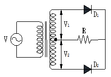
- 60
- 120
- 180
- 240
(정답률: 29%)
55. 200[V] 3상 유도전동기의 전부하 슬립이 0.06이다. 공급전압이 10[%] 저하된 경우의 전부하 슬립은 약 얼마인가?
- 0.074
- 0.067
- 0.⑤4
- 0.049
(정답률: 18%)
56. 직류전동기의 실측효율을 측정하는 방법이 아닌 것은?
- 블론델법을 사용하는 방법
- 보조 발전기를 사용하는 방법
- 전기 동력계를 사용하는 방법
- 프로니 브레이크를 사용하는 방법
(정답률: 35%)
57. 다음 동기기 중 슬립링을 사용하지 않는 기기는?
- 동기발전기
- 동기전동기
- 유도자형 고주파발전기
- 고정자 회전기동형 동기전동기
(정답률: 38%)
58. 어떤 변압기의 전부하 동손이 270[W], 철손이 120[W]일 때 이 변압기를 최고효율로 운전하는 출력은 정격출력의 약 몇 [%]가 되는가?
- 22.5
- 33.3
- 44.4
- 66.7
(정답률: 37%)
59. 유도전동기의 회전력 발생 요소 중 제곱에 비례하는 요소는?
- 슬립
- 2차 기전력
- 2차 권선저항
- 2차 임피던스
(정답률: 38%)
60. 직류기에서 정류를 좋게 하기 위한 방법이 아닌 것은?
- 보상권선을 설치하여 전기자 반작용을 보상한다.
- 보극을 설치하여 정류 전압을 얻어 리액턴스 전압을 보상한다.
- 저항 정류를 위하여 브러시의 접촉 저항이 큰 것을 선정한다.
- 자속변화를 줄이기 위하여 자극편의 모양을 좋게 하고 전기자 교차 기자력에 대한 자기저항을 적게 하여 반작용 자속을 늘린다.
(정답률: 38%)
4과목: 회로이론
61. 그림과 같은 주기파형의 전류 i=10e-100t[A]의 평균값은 약 몇 [A]인가?
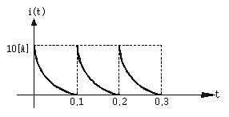
- 0.5
- 1
- 2.5
- 5
(정답률: 30%)
62. 그림과 같은 R-C 회로에서 입력전압을 ei(t), 출력전압을 eo(t)라 할 때의 전달 함수는? (단, τ=RC 이다.)
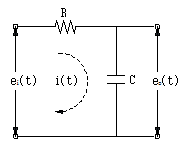
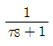
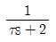
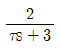
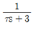
(정답률: 50%)
63. R=40[Ω], L=80[mH]의 코일이 있다. 이 코일에 100[V], 60[Hz]의 전압을 가할 때에 소비되는 전력은 약 몇 [W]인가?
- 200
- 160
- 120
- 100
(정답률: 31%)
64. 분포 정수회로에서 직렬 임피던스 Z[Ω], 병렬 어드미턴스 Y[℧]일 때 선로의 전파정수
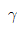
는?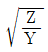
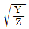
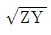
- ZY
(정답률: 32%)
65. 그림과 같은 단위 계단함수는?
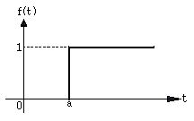
- u(t)
- -u(a)
- u(t-a)
- u(a-t)
(정답률: 45%)
66. 4단자 정수 A, B, C, D 중에서 전압 이득의 차원을 가지는 것은?
- A
- B
- C
- D
(정답률: 39%)
67. 단위 램프함수 tu(t)의 라플라스 변환은?
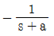
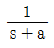
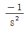
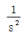
(정답률: 36%)
68. R-L-C 직렬 회로에서 진동 조건은 어느 것인가?
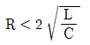
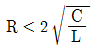
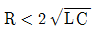
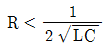
(정답률: 38%)
69. 키르히호프의 전류법칙(KCL) 적용에 대한 설명 중 틀린 것은?
- 이 법칙은 집중정수회로에 적용된다.
- 이 법칙은 선형소자로만 이루어진 회로에 적용된다.
- 이 법칙은 회로의 선형, 비선형에 관계 받지 않고 적용된다.
- 이 법칙은 회로의 시변, 시불변에는 관계 받지 않고 적용된다.
(정답률: 40%)
70. 테브난의 정리를 이용하여 그림(a)의 회로를 그림(b)와 같은 등가회로로 만들려고 한다. E[V]와 R[Ω]의 값은 각각 얼마인가?
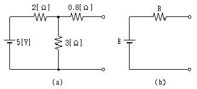
- E=3, R=2
- E=5, R=2
- E=5, R=5
- E=3, R=1.2
(정답률: 34%)
71. 구형파의 파고율은?
- 1
- 2
- 1.414
- 1.732
(정답률: 48%)
72. 시간함수 1-coswt를 라플라스 변환하면?
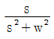
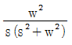
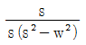
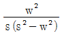
(정답률: 30%)
73. 대칭 3상 Y결선에서 선간전압이 200√3이고 각 상의 임피던스 Z=30+j40[Ω]의 평형 부하일 때 선전류는 몇 [A]인가?
- 2
- 2√3
- 4
- 4√3
(정답률: 39%)
74. 불평형 3상전류 Ia=10+j2[A], Ib=-20-j24[A], Ic=-5+j10[A]일 때의 영상전류 I0[A]는?
- 15+j2
- -5-j4
- -15-j12
- -45-j36
(정답률: 38%)
75. 그림에서 저항 양단의 전압 V[V]는 얼마인가?
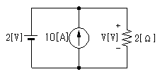
- 2
- 4
- 18
- 22
(정답률: 38%)
76.
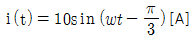
로 표시되는 전류 파형보다 위상이 30˚ 앞서고, 최대치가 100[V]인 전압파형을 식으로 나타내면?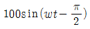
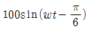
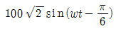
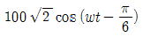
(정답률: 35%)
77. 그림과 같은 RC 직렬회로에 비정현파 전압 v(t)=20+220√2sinwt+40√2sin3wt[V]를 가할 때 제3고조파전류 i3(t)는 몇 [A]인가? (단, ω=120π[rad/s]이다.)
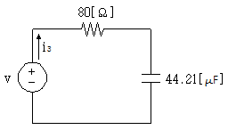
- 0.49sin(360πt-14.04°)
- 0.49sin(360πt+14.04°)
- 0.49√2sin(360πt-14.04°)
- 0.49√2sin(360πt+14.04°)
(정답률: 19%)
78. 불평형 회로에서 영상분이 존재하는 3상회로 구성은?
- △-△ 결선의 3상 3선식
- △-Y 결선의 3상 3선식
- Y-Y 결선의 3상 3선식
- Y-Y 결선의 3상 4선식
(정답률: 37%)
79. 스위치 S를 닫을 때의 전류 i(t)는?
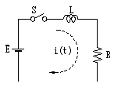
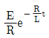
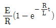
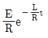
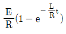
(정답률: 35%)
80. 상순이 a-b-c인 3상 회로의 각 상전압이 보기와 같을 때 역상분 전압은 약 몇 [V]인가? (단, 보기 전압의 단위는 [V]이다.)
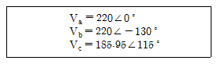
- 22
- 28
- 30
- 35
(정답률: 26%)
5과목: 전기설비
81. 사용전압이 154[kV]의 가공전선과 식물 사이의 이격거리는 최소 몇 [m] 이상이어야 하는가?
- 2
- 2.6
- 3.2
- 3.8
(정답률: 36%)
82. 저압 및 고압 가공전선의 시설 기준으로 틀린 것은?
- 사용전압 400[V] 이상의 저압가공전선에는 다심형 전선을 사용하여 시설할 수 있다.
- 사용전압 400[V] 미만인 저압가공전선은 2.6[mm] 이상의 절연전선을 사용하여 시설할 수 있다.
- 사용전압 400[V] 이상의 고압가공전선을 시가지 외에 가설하는 경우 지름 4[mm] 이상의 경동선을 사용하여야 한다.
- 사용전압 400[V] 미만인 저압가공전선으로 다심형 전선을 사용하는 경우 제3종 접지를 한 조가용선으로 사용하여야 한다.
(정답률: 24%)
83. 사용전압이 400[V] 미만인 쇼윈도 또는 쇼케이스 안의 배선공사에 캡타이어 케이블을 사용하여 직접 조영재에 접촉하여 시설하는 경우, 전선의 붙임점 간의 거리는 최대 몇 [m] 이하로 하는가?
- 0.3
- 0.5
- 0.8
- 1
(정답률: 36%)
84. 저압 옥내배선을 금속관 공사에 의하여 시설하는 경우에 대한 설명 중 옳은 것은?
- 전선은 옥외용 비닐절연전선을 사용하여야 한다.
- 전선은 굵기에 관계없이 연선을 사용하여야 한다.
- 콘크리트에 매설하는 금속관의 두께는 1.2[mm] 이상이어야 한다.
- 옥내 배선의 사용 전압이 교류 600[V] 이하인 경우 관에는 제 3종 접지공사를 하여야 한다.
(정답률: 45%)
85. 가공전선로의 지지물에 시설하는 통신선 또는 이에 직접 접속하는 가공통신선의 높이는 도로를 횡단하는 경우에는 지표상 몇 [m] 이상이어야 하는가?
- 5.5
- 6
- 6.5
- 7
(정답률: 42%)
86. 발전소, 변전소, 개폐소 또는 이에 준하는 장소 이외에 시설된 특고압 전선로에 접속하는 배전용 변압기의 1차 및 2차 전압은?
- 1차 : 35[kV] 이하, 2차 : 저압 또는 고압
- 1차 : 50[kV] 이하, 2차 : 저압 또는 고압
- 1차 : 35[kV] 이하, 2차 : 특고압 또는 고압
- 1차 : 50[kV] 이하, 2차 : 특고압 또는 고압
(정답률: 39%)
87. 저압옥내배선을 애자사용공사에 의하여 조영재의 옆면에 따라 시설하는 경우 전선 지지점간의 거리는 몇 [m] 이하이어야 하는가?
- 1
- 2
- 6
- 8
(정답률: 34%)
88. 지중 전선로를 직접 매설식에 의하여 차량 기타 중량물의 압력을 받을 우려가 있는 장소에 시설하는 경우 매설 깊이는 몇 [m] 이상으로 하여야 하는가?(관련 규정 개정전 문제로 여기서는 기존 정답인 2번을 누르면 정답 처리됩니다. 자세한 내용은 해설을 참고하세요.)
- 1
- 1.2
- 1.5
- 2
(정답률: 44%)
89. 특고압 가공전선로에 케이블을 사용하는 경우 조가용선 및 케이블의 피복에 사용하는 금속체에는 제 몇 종 접지공사를 하여야 하는가?
- 제1종 접지공사
- 제2종 접지공사
- 제3종 접지공사
- 특별 제3종 접지공사
(정답률: 35%)
90. 3상 220[V] 유도전동기의 권선과 대지간의 절연내력시험 시험전압과 견디어야 할 최소시간으로 옳은 것은?
- 220[V], 5분
- 275[V], 10분
- 330[V], 20분
- 500[V], 10분
(정답률: 43%)
91. 사용전압이 15[kV] 이하인 특고압 가공전선로의 중성선의 다중접지 및 중성선의 시설 기준을 설명한 것 중 틀린 것은?
- 접지한 곳 상호 간의 거리는 전선로에 따라 300[m] 이하로 한다.
- 다중접지한 중성선은 저압전로의 접지측 전선이나 중성선과 공용할 수 있다.
- 각 접지선을 중성선으로부터 분리하였을 경우의 각 접지점의 대지 전기저항 값은 100[Ω] 이하로 한다.
- 접지선은 공칭단면적 6[mm2] 이상의 연동선 또는 이와 동등 이상의 세기 및 굵기의 쉽게 부식하지 않는 금속선으로 한다.
(정답률: 32%)
92. 전로의 중성점을 접지하는 목적이 아닌 것은?
- 고전압 침입 예방
- 이상 시 전위상승 억제
- 부하 전류의 경감으로 전선을 절약
- 보호계전장치 등의 확실한 동작의 확보
(정답률: 48%)
93. 변전소의 주요 변압기에 반드시 시설하지 않아도 되는 계측 장치는?
- 전류계
- 전압계
- 전력계
- 역률계
(정답률: 55%)
94. 일반주택 및 아파트 각 호실의 현관등과 같은 조명용 백열전등을 설치할 때에는 타임스위치를 시설하여야 한다. 몇 분 이내에 소등되는 것이어야 하는가?
- 3
- 5
- 7
- 10
(정답률: 55%)
95. 인입용 비닐절연전선을 사용한 저압 가공전선은 횡단보도교 위에 시설하는 경우 노면상의 높이는 몇 [m] 이상으로 하여야 하는가?
- 3
- 3.5
- 4
- 4.5
(정답률: 22%)
96. 전기욕기용 전원장치로부터 욕탕안의 전극까지의 전선 상호간 및 전선과 대지 사이의 절연 저항값은 몇 [MΩ] 이상이어야 하는가?
- 0.1
- 0.5
- 1
- 5
(정답률: 38%)
97. 시가지에 시설하는 154[kV] 가공전선로에는 지락 또는 단락이 발생한 경우 몇 초 이내에 자동적으로 이를 전로로부터 차단하는 장치를 시설하여야 하는가?
- 1
- 2
- 3
- 5
(정답률: 43%)
98. 조명용 전등의 시설에 대한 설명으로 틀린 것은?
- 가정용 전등은 등기구마다 점멸이 가능하도록 한다.
- 국부조명설비는 그 조명대상에 따라 점멸할 수 있도록 시설한다.
- 가로등에 시설하는 고압방전등은 그 효율이 50[lm/W] 이상의 것이어야 한다.
- 관광진흥법과 공중위생법에 의한 숙박업에 이용되는 객실의 입구등은 1분 이내에 소등되도록 한다.
(정답률: 46%)
99. 유희용 전차의 시설에서 전차안의 전로 및 전기공급설비의 시설방법 중 틀린 것은?
- 전로의 사용전압은 직류 60[V] 이하, 교류 40[V] 이하일 것
- 유희용 전차에 전기를 공급하는 전로에는 전용개폐기를 시설할 것
- 전로와 대지 절연저항은 사용전압에 대한 누설전류 규정 전류의 2000분의 1을 넘지 않을 것
- 유희용 전차 안에 승압용 변압기를 시설하는 경우에는 그 변압기의 2차 전압은 150[V] 이하일 것
(정답률: 29%)
100. 특고압 가공전선로 중 지지물로 직선형의 철탑을 연속하여 10기 이상 사용하는 부분에는 몇 기 이하마다 내장 애자장치가 되어 있는 철탑 또는 이와 동등 이상의 강도를 가지는 철탑 1기를 시설하여야 하는가?
- 1
- 3
- 5
- 10
(정답률: 42%)